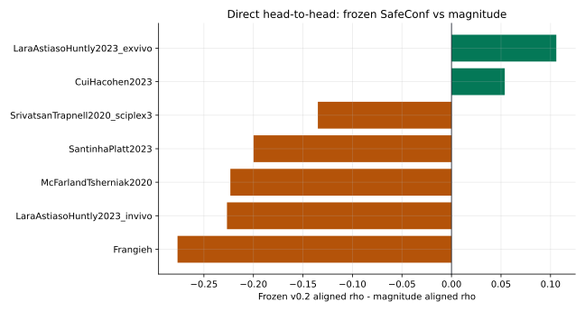
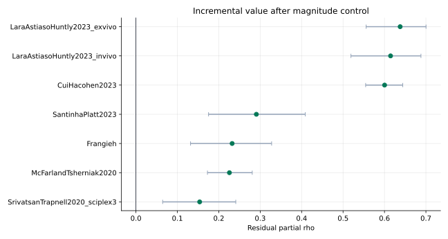
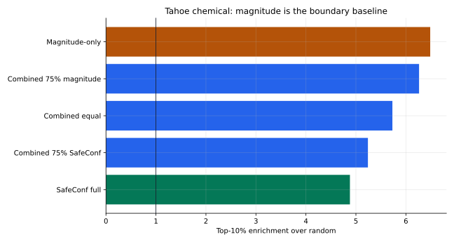

审稿人最可能追问的问题：SafeConf 是否只是 magnitude 的影子？
Frozen v0.2 直接对比 magnitude 只赢 2/7 个数据集；但 E2 显示 7/7 个数据集在控制 magnitude 后仍有正的 residual signal。论文主张应转向“增量风险信息”和“复核决策价值”。



| dataset_name | magnitude_aligned_rho | frozen_v02_aligned_rho | delta_frozen_minus_magnitude_aligned_rho | magnitude_partial_rho_control_magnitude | frozen_v02_partial_rho_control_magnitude | delta_frozen_minus_magnitude_partial_rho_control_magnitude | magnitude_aurc_reduction_vs_random_pct | frozen_v02_aurc_reduction_vs_random_pct | delta_frozen_minus_magnitude_aurc_reduction_vs_random_pct | magnitude_avoidable_gap_captured_pct | frozen_v02_avoidable_gap_captured_pct | delta_frozen_minus_magnitude_avoidable_gap_captured_pct | frozen_beats_magnitude_aligned | frozen_beats_magnitude_aurc |
|---|---|---|---|---|---|---|---|---|---|---|---|---|---|---|
| Frangieh | 0.859365 | 0.582722 | -0.276643 | 0.900178 | 0.473820 | -0.426359 | 17.234124 | 12.065432 | -5.168693 | 87.833546 | 61.491355 | -26.342191 | False | False |
| LaraAstiasoHuntly2023_invivo | 0.620871 | 0.394162 | -0.226709 | 0.573931 | 0.394276 | -0.179655 | 34.251475 | 30.048838 | -4.202637 | 48.759821 | 42.777018 | -5.982803 | False | False |
| McFarlandTsherniak2020 | 0.137378 | -0.085934 | -0.223312 | -0.122462 | -0.080758 | 0.041704 | 10.953294 | -12.544651 | -23.497945 | 23.009166 | -26.352067 | -49.361232 | False | False |
| SantinhaPlatt2023 | 0.352292 | 0.152410 | -0.199882 | 0.468683 | 0.151755 | -0.316928 | 11.763368 | 8.934489 | -2.828879 | 26.745822 | 20.313932 | -6.431890 | False | False |
| SrivatsanTrapnell2020_sciplex3 | 0.562713 | 0.427781 | -0.134931 | 0.773269 | 0.426870 | -0.346399 | 22.909609 | 18.005655 | -4.903954 | 62.873694 | 49.415163 | -13.458531 | False | False |
| CuiHacohen2023 | 0.391569 | 0.445376 | 0.053807 | 0.129162 | 0.445250 | 0.316088 | 21.835634 | 27.054937 | 5.219302 | 46.268159 | 57.327490 | 11.059331 | True | True |
| LaraAstiasoHuntly2023_exvivo | 0.457312 | 0.563151 | 0.105838 | 0.521609 | 0.564893 | 0.043284 | 14.138661 | 57.669986 | 43.531325 | 20.037291 | 81.729825 | 61.692534 | True | True |